What is MAKE?
The Municipal Advocates for Kabataan Empowerment (MAKE) is a youth program designed to empower young people in the 3rd District of Cotabato. It aims to develop the skills of youth leaders and prepare them to advocate for positive social change.
Program Mission
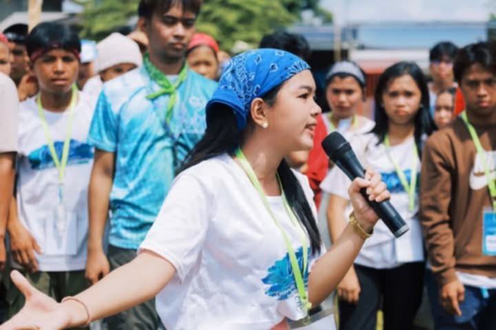 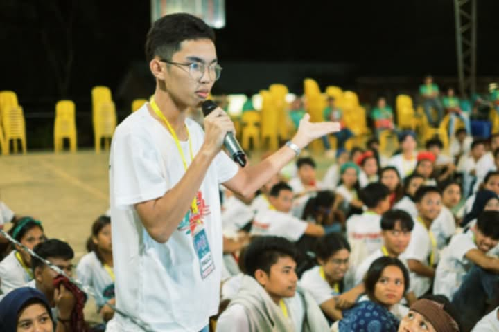
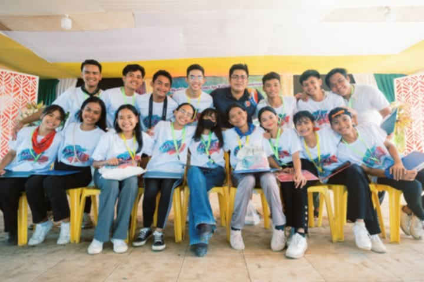
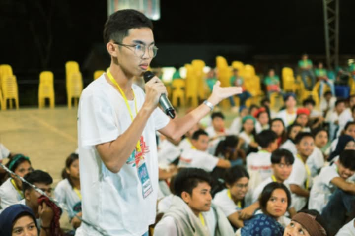
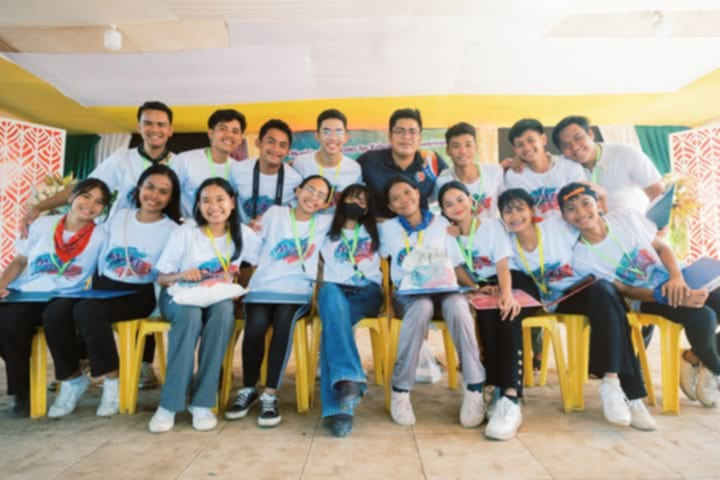
 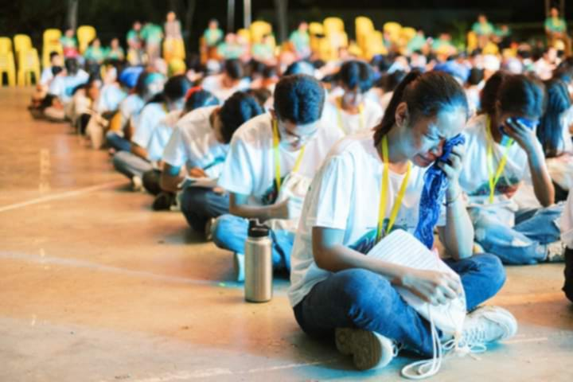
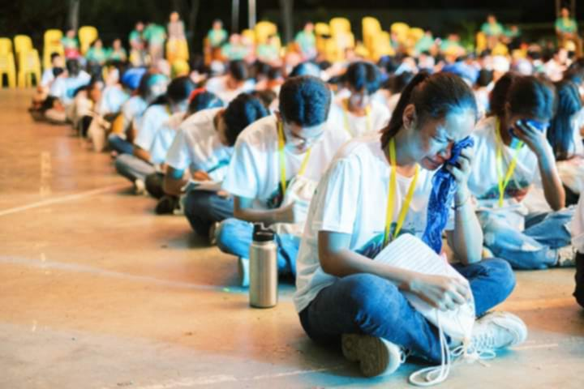
 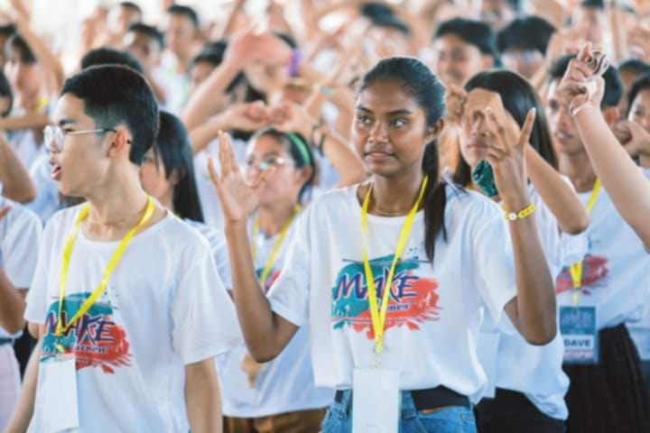
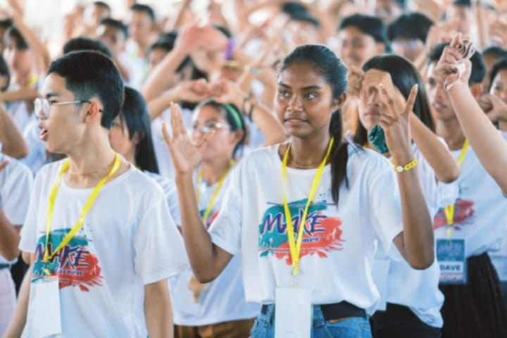
 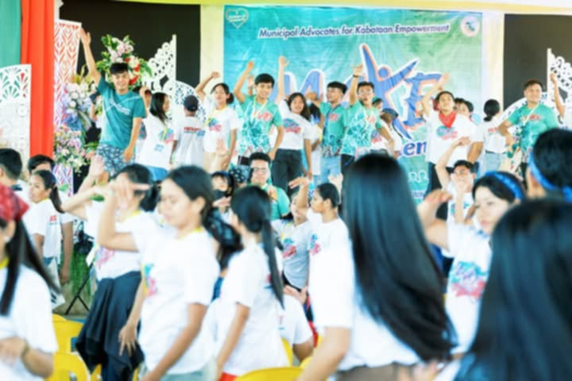
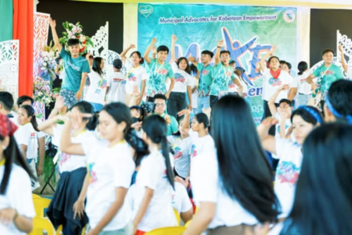


The Municipal Advocates for Kabataan Empowerment (MAKE) is more than just a program—it's a movement to transform the lives of the youth in Cotabato. At its core, MAKE is committed to empowering the next generation by providing them with the tools, skills, and opportunities to lead with integrity and make a meaningful impact within their communities. In a rapidly changing world, the youth hold the key to sustainable growth and social change, and MAKE is here to guide them every step of the way. Through carefully designed initiatives, the program focuses on nurturing the leadership potential of young individuals, fostering the development of their advocacy skills, and encouraging them to take an active role in driving social and community-based changes. The goal is to build leaders who are not only knowledgeable but who possess a deep sense of responsibility toward their communities and their country.
MAKE envisions a future where young people are not only participants in their societies but are catalysts of change. By providing them with the platform to engage in dialogue, education, and social action, MAKE helps youth build the confidence and capacity to advocate for the issues that matter most to them. Whether it's through leadership training, community outreach, or policy advocacy, the program encourages a holistic approach to youth empowerment. The impact of MAKE goes beyond the individual participants. As these young leaders return to their communities, they become conduits of positive change—sparking discussions on crucial topics like education, sustainability, health, and civic participation. The ripple effect created by their efforts will help build a more informed, compassionate, and proactive generation, one that will continue to shape the future of Cotabato and beyond. In the end, MAKE is about more than just leadership; it’s about giving young people the confidence to dream big and the tools to turn those dreams into reality. Together, we are building a generation of empowered youth who are ready to lead with purpose, integrity, and the unwavering belief that they can change the world.
History of MAKE

 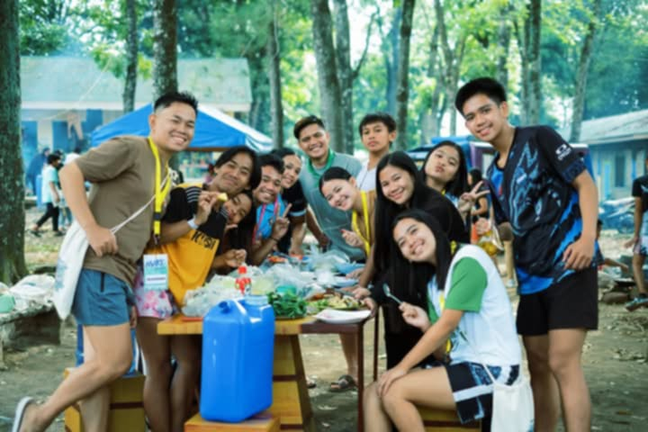
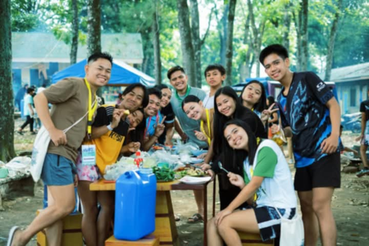
 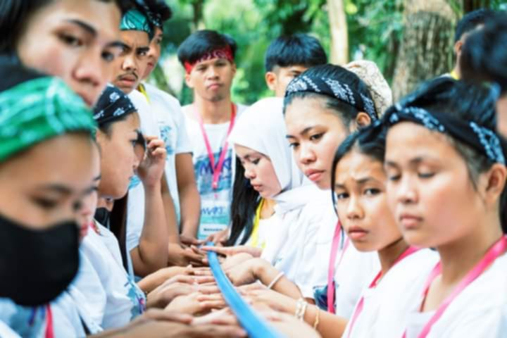
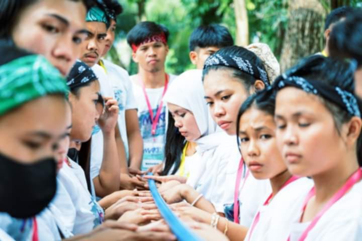
 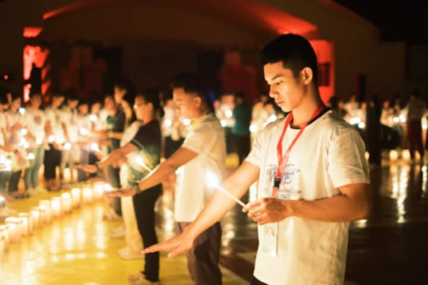
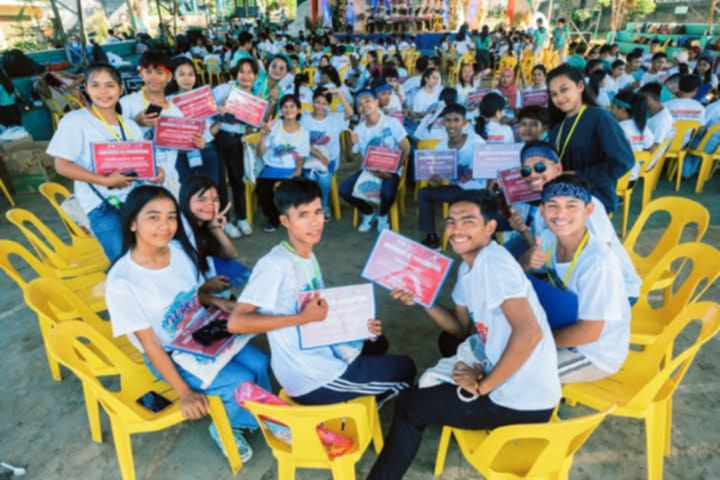
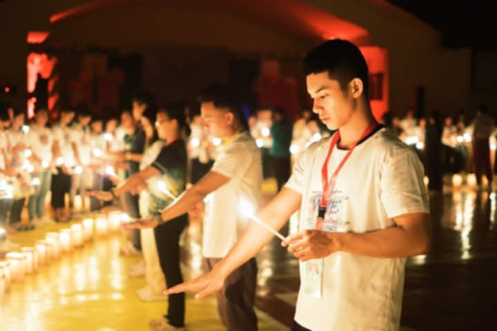
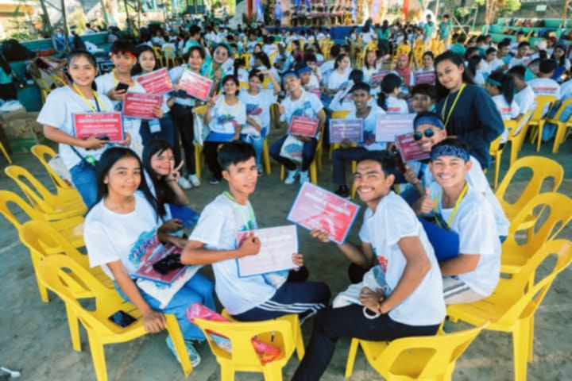
 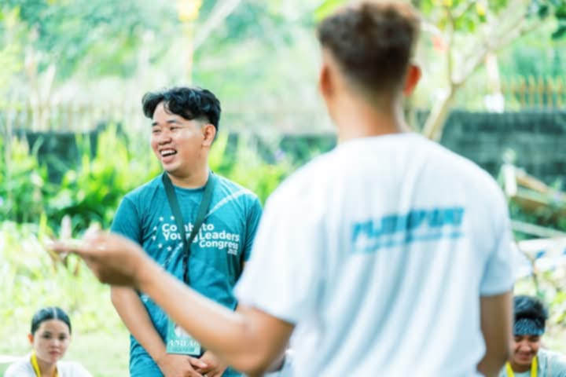
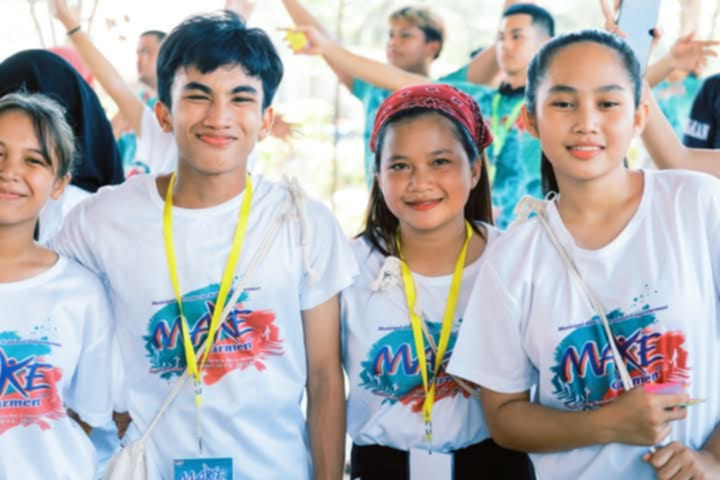
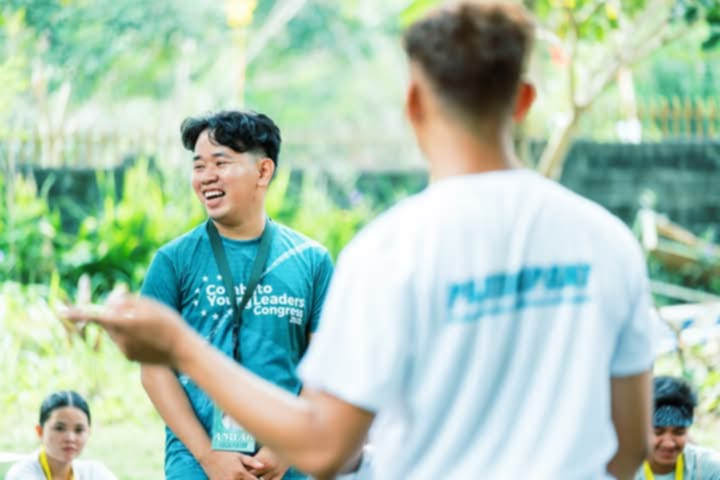
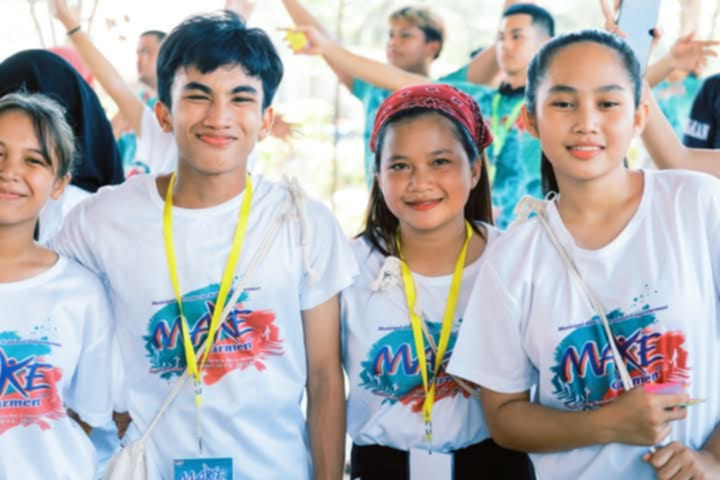
 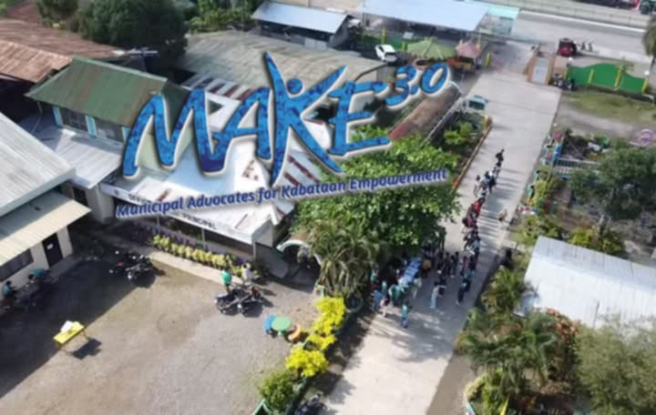
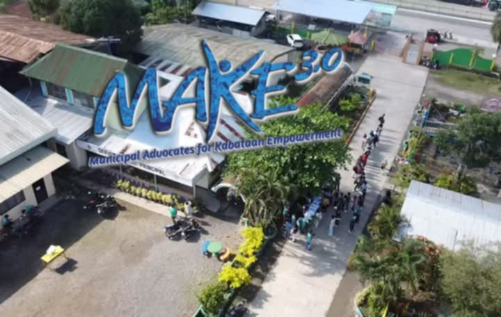

The Municipal Advocates for Kabataan Empowerment (MAKE) program was founded by Hon. Vice Mayor Ralph Ryan Rafael of Matalam, Cotabato, with the vision of empowering the youth and providing them with the tools and opportunities to become leaders in their communities. Initially launched in the Municipality of Matalam, the program aimed to create a platform where young people could learn, grow, and make a lasting difference. Through his leadership, Vice Mayor Rafael sought to instill values such as integrity, civic responsibility, and social advocacy among the youth, empowering them to lead with purpose. The program’s early years focused on grassroots efforts, with a small group of passionate young leaders from Matalam taking part in workshops, training sessions, and community-based initiatives. These first participants became trailblazers, advocating for positive social change and demonstrating the power of empowered youth in their local communities. Their success stories fueled the momentum for the program’s growth, and soon MAKE garnered attention and support from a wider audience.
Recognizing the success of MAKE and its potential for broader impact, Hon. Samantha Santos, the 3rd District Representative of Cotabato, took a pivotal step in adapting and expanding the program to reach more youth across the district. Representative Santos embraced the vision of MAKE, and under her leadership, the program scaled up its efforts, extending its influence throughout the entire 3rd District of Cotabato. Her support and advocacy played a crucial role in making MAKE a district-wide initiative, ensuring that even more young people had access to the transformative leadership training and opportunities offered by the program. With both Vice Mayor Ralph Ryan Rafael and Representative Samantha Santos at the helm, MAKE has continued to grow, serving as a powerful force for youth empowerment in Cotabato. The program now reaches more communities, providing youth with the skills, confidence, and knowledge they need to take on leadership roles and advocate for change. Today, MAKE stands as a testament to the vision, collaboration, and dedication of these two leaders, who continue to inspire and empower the youth of Cotabato.